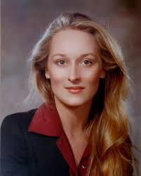

Bio:
My name is Natalie Vasileff and I am a girl who codes. I am sixteen years old and I was born in London, England. I soon moved to Moscow, Russia where my family is from and I grew up there. I came to America three years ago and began to make amazing friends in Scranton, PA. I currently live with my mom and dad and my cat, Lucia, in Darien, CT. My main hobbies include writing and reading because I want to be a journalist or work in publishing when I’m older. Writing has been my one true passion for as long as I can remember, and I’m excited to find a way to connect it with what I’m learning at Girls Who Code!
Likes:
Tea, fantasy books, Harry Potter, concerts, and alternative music.
Dislikes:
People that are intolerant, spiders, cauliflower, and
little screaming children.
Favorite Website:
Tumblr : I could spend hours on here!
YouTube : Some of my favorite YouTubers are Shane Dawson, Sasha Alsberg, Coll is Cool, and Dodie Clark!
Fun Fact:
I can flick my hands together to do a weird trick when I am bored or nervous.
Bucket List Musts:
Go skydiving, go bungee jumping, visit Antarctica, invent "spaghetti-on-a-stick", and get at least 10 tattoos.
Favorite Singer:
Favorite Actress:
